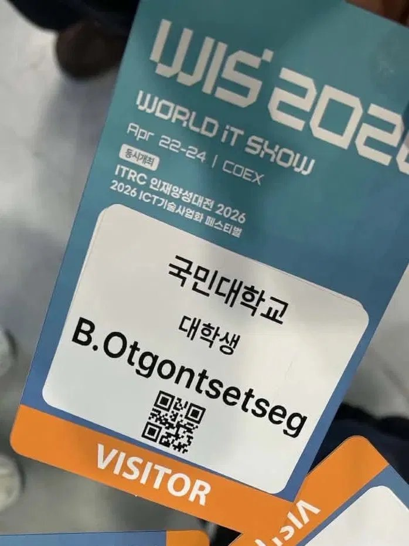

활동 감상문 02
WIS 2026 AI 전시회 참관 후기

국민대학교 대학생 자격으로 참관.
4월에 COEX에서 열린 WIS 2026에 다녀왔다. 배지를 받아 들었을 때 처음으로 실감이 났다. '내가 진짜 여기 와 있구나.'
AI, 클라우드, 반도체, 로봇, 자율주행 등 요즘 뉴스에서 이름만 보던 기술들이 한 공간에 다 있었다. 부스를 돌아다니다 보니 어느 순간부터 각 기업이 같은 기술을 얼마나 다른 방식으로 풀고 있는지가 눈에 들어왔다. 특히 AI가 이미 연구실 바깥에서, 실제 서비스 안에서 조용히 작동하고 있다는 것이 가장 인상적이었다.
유학생 입장에서 한국의 대형 IT 전시회를 직접 경험한 건 처음이라 신기한 게 많았다. 언어 장벽도 물론 있었지만, 기술 앞에서는 생각보다 그 벽이 낮아지는 것 같았다. 화면에 띄워진 시연 하나가 긴 설명보다 더 많은 걸 말해 줄 때가 있었으니까.
전시회를 나오면서 든 생각은, 이걸 그냥 구경으로 끝내면 아깝다는 거였다. 다음에 또 올 기회가 있다면 더 구체적인 질문을 들고 가야겠다.